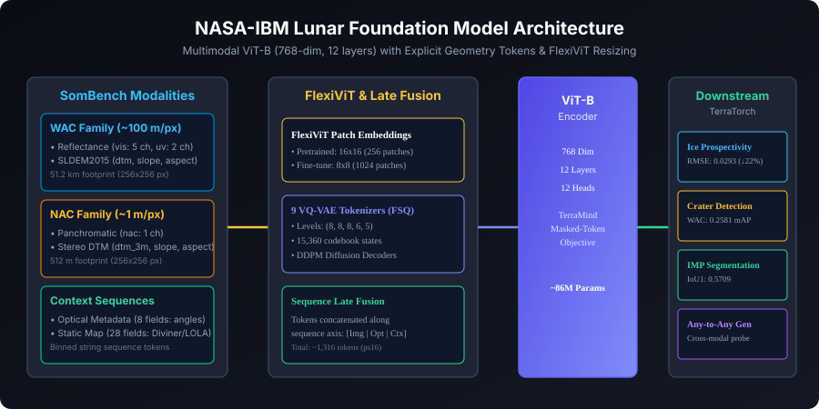

Model at a Glance
| Backbone Architecture | ViT-B Encoder + 12-layer Transformer Decoder |
| Hidden Dimension | 768 (12 layers, 12 attention heads) |
| Input Native Resolution | 256 × 256 pixels |
| Pretraining Patch Size | 16 × 16 (FlexiViT resizable to 8x8) |
| Tokenization Objective | Masked-Token Modeling (TerraMind, discrete FSQ vocabularies) |
| Tokenizers | 9 modality-specific VQ-VAEs (levels 8,8,8,6,5 = 15,360 states) |
| Training Data | SomBench: 963,609 WAC + 1,000,113 NAC bundles (1,963,722 total) |
| Compute Infrastructure | 16 × NVIDIA H100, 150k steps, bf16 (~1.1k GPU-hours) |
| License | Apache-2.0 Open Source |
Core Scientific Innovations
Acquisition Geometry as Explicit Context
Lunar appearance is dominated by solar illumination angles rather than intrinsic surface variations. The model tokenizes incidence, emission, phase, and azimuth as sequence inputs, resolving the dominant illumination confound directly.
Joint Mixed-Resolution Pretraining
A single set of weights covers both regional WAC (~100 m/px) and meter-scale NAC (~1 m/px) in a single pretraining loop, bridging a 100× spatial scale gap.
FlexiViT & Modality Decoupling
FlexiViT patch embedding lets you resize patch grids (e.g. ps8 for higher dense resolution) without backbone retraining; late-fusion tokenization allows dropping or adding modalities at fine-tuning time.
Interactive Illumination Simulator
Explore how solar incidence and azimuth cast dramatic shadows across lunar topography, creating the visual confounds that NASA-IBM LFM solves via sequence tokenization.
Tokenized Sequence Representation:
INC=65.0 | AZIM=120.0 | EMISS=0.0 | PHASE=65.0 | C_LAT=0.00 | C_LON=0.00
Dynamic Shadow Simulation
Simulated 256×256 px crater tile with dynamic shadow casting vector
FlexiViT Patch Embedding Explorer
FlexiViT allows evaluating or fine-tuning the pretrained ViT-B backbone at different patch sizes without retraining weights.
Multimodal Token Late Fusion
Tokens are embedded per-modality and concatenated along the sequence dimension:
Architecture Scheme & Dataflow

Figure 1: Multimodal tokenization and fusion pipeline spanning 13 lunar modalities (LROC NAC, WAC, Kaguya TC, SLDEM2015, LOLA slope, Diviner rock abundance, solar geometry, location coordinates) into ViT-B transformer backbone with late fusion and task decoders.
Artemis Candidate Landing Zones
Explore South Polar candidate landing sites around Shackleton Crater (89.9°S, 0.0°E) evaluated for slope trafficability, illumination stability, and volatile cold-trap proximity.
Interactive Landing Hazard & Ingress Simulator
Simulate autonomous touchdown clearance and rover ingress feasibility based on NASA-IBM LFM slope and boulder predictions.
South Pole orthographic projection: Green landing ellipse on Connecting Ridge with dashed rover ingress corridor to the 40 K permanent cold trap
SomBench Benchmark Performance (Ground Truth)
Scientific & Operational Disclosures (ABAI [[L001]], [[L006]])
Querying repository metadata...